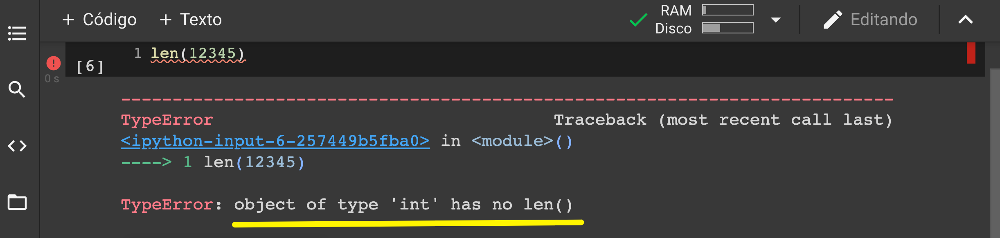

Funciones internas en Python¶
90:00 min | Última modificación: Agosto 24, 2021 | [YouTube]
Print¶
[2]:
#
# Uso básico
#
print("Hola mundo cruel!")
Hola mundo cruel!
[4]:
#
# Concatenación de caracteres
#
print("Hola" + "mundo" + "cruel!")
Holamundocruel!
[5]:
print("Hola", "mundo", "cruel!")
Hola mundo cruel!
[6]:
#
# Por defecto, sep = " "
#
print("Hola", "mundo", "cruel!", sep='-')
Hola-mundo-cruel!
[9]:
#
# sep = retorno de carro
#
print("Hola", "mundo", "cruel!", sep='\n')
Hola
mundo
cruel!
[7]:
#
# Por defecto, end = "\n"
#
print("Hola", "mundo", "cruel!", end=">>>")
Hola mundo cruel!>>>
[8]:
float_var = 1.0
print("Hola mundo cruel!", float_var)
Hola mundo cruel! 1.0
Función len¶
[10]:
#
# Longitud de una cadena de texto
#
len("Hola mundo cruel!")
[10]:
17
[ ]:
#
# Los flotantes (float), los enteros (int), y los
# booleanos (bool) no tienen longitud
#

Funciones min y max¶
[11]:
#
# Valor mínimo
#
min(1, 2, 3, 4, 5)
[11]:
1
[12]:
#
# Valor máximo
#
max(1, 2, 3, 4, 5)
[12]:
5
Función round¶
[16]:
#
# Redondeo a tres decimales
#
var_pi = 3.141516
round(var_pi, 3)
[16]:
3.142
[17]:
#
# Por defecto redondea al entero mas cercano
#
round(var_pi)
[17]:
3
[18]:
round(4.9)
[18]:
5
Función sorted¶
[19]:
#
# Ordenamiento de una cadena de caracteres
#
sorted("aighdyeu")
[19]:
['a', 'd', 'e', 'g', 'h', 'i', 'u', 'y']
[20]:
#
# Ordenamiento inverso
#
sorted("aighdyeu", reverse=True)
[20]:
['y', 'u', 'i', 'h', 'g', 'e', 'd', 'a']
[21]:
#
# Las letras mayusculas van primero que
# las minúsculas
#
sorted("AfaidEueZ")
[21]:
['A', 'E', 'Z', 'a', 'd', 'e', 'f', 'i', 'u']
Módulos y funciones matemáticas¶
La lista completa de funciones matemáticas se encuentra disponible aquí.
[2]:
#
# Importa la librería math
#
import math
#
# Llama la función cos en la librería math
#
math.cos(3.141516)
[2]:
-0.9999999970621136
[1]:
#
# Importación usando from
#
from math import cos
cos(3.141516)
[1]:
-0.9999999970621136
[16]:
sum([0.1] * 10)
[16]:
0.9999999999999999
[15]:
math.fsum([0.1] * 10)
[15]:
1.0
[3]:
#
# Constantes definidas en los módulos
#
math.pi
[3]:
3.141592653589793
[12]:
math.e
[12]:
2.718281828459045
[13]:
math.inf
[13]:
inf
[4]:
import string
string.ascii_lowercase
[4]:
'abcdefghijklmnopqrstuvwxyz'
[5]:
string.digits
[5]:
'0123456789'
[6]:
string.ascii_letters
[6]:
'abcdefghijklmnopqrstuvwxyzABCDEFGHIJKLMNOPQRSTUVWXYZ'
[8]:
string.punctuation
[8]:
'!"#$%&\'()*+,-./:;<=>?@[\\]^_`{|}~'
[9]:
string.whitespace
[9]:
' \t\n\r\x0b\x0c'
[ ]: